%%{init: {"theme": "base", "themeVariables": {"background": "#ffffff", "primaryColor": "#ffffff", "primaryBorderColor": "#000000", "primaryTextColor": "#000000", "lineColor": "#000000", "textColor": "#000000", "edgeLabelBackground": "#ffffff", "fontFamily": "sans-serif"}}}%%
flowchart TD
root["/"] --> bin["/bin/"]
root --> etc["/etc/"]
root --> home["/home/"]
root --> usr["/usr/"]
root --> var["/var/"]
etc --> passwd["/etc/passwd"]
etc --> shadow["/etc/shadow"]
home --> user["/home/user/"]
usr --> usrbin["/usr/bin/"]
usr --> usrlib["/usr/lib/"]
var --> log["/var/log/"]
“Linux hardening” is a term sometimes used to mean “increasing the security of a deployed Linux system”. Confusingly enough, it is closely related to Linux kernel hardening, which is encompassed by the aforementioned definition, but does not exhaust it (so not all of “Linux hardening” is “Linux kernel hardening” alone!). One such technique is mandatory access control1, as implemented in SELinux, which was originally developed by the NSA and has since grown into a large project spanning the kernel and userspace2. We will explore it using the topos of graphs, reducing the construction to just a few lines of formulas by offloading the heavy lifting to topos theory.
Mandatory access control
Various techniques exist to implement mandatory access control, such as AppArmor by Canonical or SELinux, based on work by the NSA. In each case, we wish to restrict access to files and directories to only certain users, roles, processes, and so on. While AppArmor more or less resolves the pathname of such a file or directory and matches it against a rulebook for each user, role or process to decide whether access is permitted, SELinux instead stores this access control information alongside each file or directory as dedicated metadata (a security label, kept in the file’s extended attributes). We will focus on this second approach in this post.
On Linux, each file or directory can naively be seen as a path inside a file tree: we start with the root /, and we can add files to it (/file) or directories (/directory/), where each directory can again contain files and directories, in an inductive fashion. This naturally leads to the depiction of a file system as a tree, as commonly shown for the Filesystem Hierarchy Standard (FHS):
However, through the use of symbolic links (symlinks), we actually get the structure of a graph instead of a tree: a file or directory may then be reachable along several paths, and cycles become possible. It is therefore easier to start right away by considering a directed graph \(X\) for the file system. Nodes \(x\) and \(y\) may then be seen as files or directories, and whenever an edge \(p : x \to y\) exists, we consider \(y\) to be the parent directory of \(x\). Two observations are immediate:
- By adding identities and composing edges into paths, \(X\) generates a category (the free category on \(X\)), in which a morphism \(x \to y\) is a path from \(x\) up to its ancestor \(y\).
- Every file has empty fan-in, i.e. no inbound arrows, since nothing can be placed inside a file. The converse does not hold: an empty directory has empty fan-in as well.
An example of such a graph can be seen when we consider a directory cwd/, together with a directory cwd/sub/, files cwd/file1 and cwd/sub/file2, and a symlink cwd/sub/par/ pointing back to cwd/. The symlink par is itself a node with parent cwd/sub/, and since it points to cwd/, we add an edge from cwd into par. This gives the cycle \(\texttt{cwd} \to \texttt{par} \to \texttt{sub} \to \texttt{cwd}\), which cannot be expressed as a tree anymore.
%%{init: {"theme": "base", "themeVariables": {"background": "#ffffff", "primaryColor": "#ffffff", "primaryBorderColor": "#000000", "primaryTextColor": "#000000", "lineColor": "#000000", "textColor": "#000000", "edgeLabelBackground": "#ffffff", "fontFamily": "sans-serif"}}}%%
flowchart BT
file1["cwd/file1"] --> cwd["cwd/"]
sub["cwd/sub/"] --> cwd
file2["cwd/sub/file2"] --> sub
par["cwd/sub/par/"] --> sub
cwd -.-> par
cwd/. Edges point from a file or directory to its parent; the dashed edge points from cwd/ into the symlink cwd/sub/par/.The topos of graphs
Funnily enough, graphs themselves can be regarded as presheaves over a certain small category3. This section is taken from my bachelor thesis4. Let \(\Gamma\) be the category with two objects \(N\) and \(A\) and, besides the identities, exactly two morphisms \[N \overset{s}{\underset{t}{\rightrightarrows}} A.\] The topos of graphs is the presheaf category \(\mathcal{G} = [\Gamma^{\text{op}}, \textbf{Set}]\).
An object \(G \in \mathcal{G}\) is uniquely determined by \(G(N)\), the set of nodes, \(G(A)\), the set of arcs, and two functions \(G(s), G(t) : G(A) \to G(N)\), which map an arc to its source and target node, respectively. In other words, \(G\) is a directed graph with nodes \(G(N)\) and arcs \(G(A)\).
A morphism \(f : G \to H\) in \(\mathcal{G}\) is a natural transformation between the presheaves \(G\) and \(H\), or explicitly a pair of functions \[f_N : G(N) \to H(N), \qquad f_A : G(A) \to H(A)\] such that the following diagrams commute: \[ \begin{array}{ccc} G(A) & \xrightarrow{G(s)} & G(N) \\ {\scriptstyle f_A} \big\downarrow & & \big\downarrow {\scriptstyle f_N} \\ H(A) & \xrightarrow[H(s)]{} & H(N) \end{array} \qquad \text{and} \qquad \begin{array}{ccc} G(A) & \xrightarrow{G(t)} & G(N) \\ {\scriptstyle f_A} \big\downarrow & & \big\downarrow {\scriptstyle f_N} \\ H(A) & \xrightarrow[H(t)]{} & H(N) \end{array} \] Intuitively, this means that \(f\) maps nodes to nodes and preserves arcs, which is exactly the standard definition of a graph homomorphism in graph theory.
As an example, let \(G\) be the path \(a \xrightarrow{p} b \xrightarrow{q} c\), i.e. \[G(N) = \{a, b, c\}, \quad G(A) = \{p, q\}, \quad G(s) : p \mapsto a,\ q \mapsto b, \quad G(t) : p \mapsto b,\ q \mapsto c,\] and let \(H\) be the graph with a single arc \(u \xrightarrow{r} v\) and a loop \(\ell : v \to v\), i.e. \[H(N) = \{u, v\}, \quad H(A) = \{r, \ell\}, \quad H(s) : r \mapsto u,\ \ell \mapsto v, \quad H(t) : r \mapsto v,\ \ell \mapsto v.\] Then a morphism \(f : G \to H\) is given by \[f_N : a \mapsto u,\ b \mapsto v,\ c \mapsto v, \qquad f_A : p \mapsto r,\ q \mapsto \ell,\] as shown in Figure 1. To check that the diagrams above commute, we have to compare sources and targets of each arc: \(f_N(G(s)(p)) = f_N(a) = u = H(s)(r) = H(s)(f_A(p))\), and likewise for the targets and for \(q\). Note that \(f\) is not injective, as it glues \(b\) and \(c\) together, and in doing so the arc \(q : b \to c\) has to become an arc \(v \to v\), which is exactly the loop \(\ell\). On the other hand, there is no morphism \(f\) with \(f_A(q) = r\) and \(f_N(b) = v\), since then \(H(s)(f_A(q)) = u \neq v = f_N(G(s)(q))\).
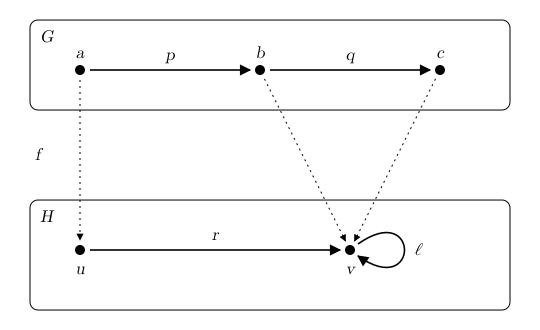
Sheaves over graphs
As we have previously seen, sheaves are the most natural data structure to track data that is associated to some location. We have used this, for example, to store state for the game Minecraft per chunk in Sheaves in Minecraft5 or Mathcraft: Topoi in Minecraft6. Storing access control information per node using sheaves therefore does not seem that far-fetched.
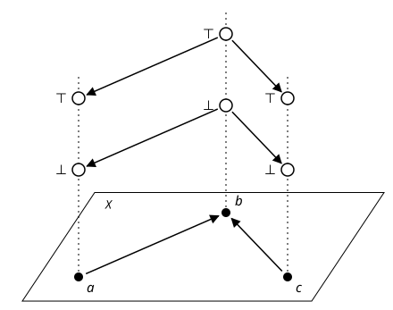
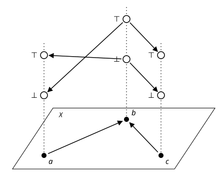
Let us now assume that we are given some graph \(X \in [\Gamma^{\text{op}}, \textbf{Set}]\), which, as noticed before, we can take to be a category (namely the free category on \(X\)). We can now consider the presheaf category over \(X\), given by \([X^{\text{op}}, \textbf{Set}]\), and take \(Y\) to be one of its presheaves, which assigns to each node the set \(\texttt{Bool}\), i.e. \(Y(x) = \texttt{Bool} = \{\bot, \top\}\) for every node \(x\). Each edge \(p : x \to y\) is then sent to a restriction map \(Y(p) : Y(y) \to Y(x)\), i.e. a function \(\texttt{Bool} \to \texttt{Bool}\) from the parent directory to its child.
A global element \(s : 1 \to Y\) of this presheaf is then given by concretely associating a compatible choice of boolean values \(s_x \in Y(x)\) to each node \(x\) in the graph, where compatible means that \(s_x = Y(p)(s_y)\) for every edge \(p : x \to y\). We can think of \(s\) as answering the question “does the user have access to node \(x\)?” for every node at once. As the restriction maps are already a part of \(Y\), choosing a value \(s_y \in Y(y)\) for a directory \(y\) already determines the access rights of everything below it, since \(s_x = Y(p)(s_y)\) for each edge \(p : x \to y\). Read the other way around, as long as every restriction map sends \(\bot\) to \(\bot\) (as is the case in Figure 3), \(s_x = \top\) forces \(s_y = \top\), so choosing a value for \(x\) determines the access rights of all its parents (i.e. the directories above it). This is however to be expected, as we might like for a directory to have access rights, given that at least one of its files is accessible! This leads us to the notion of refinement types, which we will consider for the topos of graphs in a later post some day.
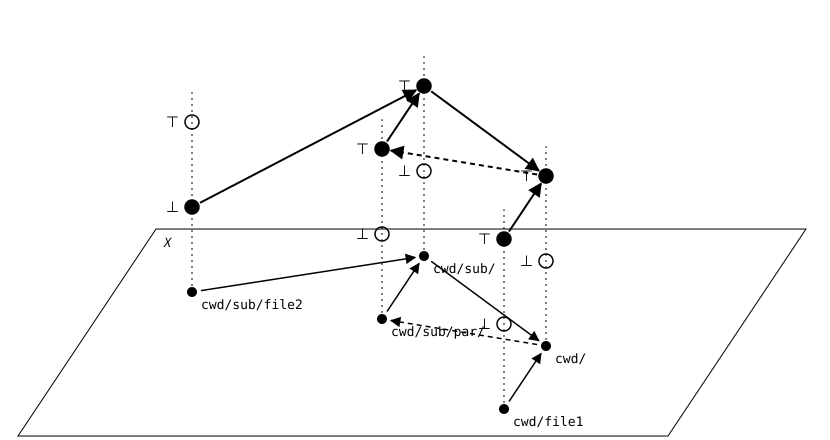
cwd/, which lies in the \(x\)-\(z\)-plane. Above each node sits a copy of \(\texttt{Bool}\), and the global element picks one value per node (filled). Here, all restriction maps are the identity, except the one for the edge from cwd/sub/file2, which is constantly \(\bot\).
Subgraphs for access control
A possibly even better approach is to consider subgraphs \(Y \rightarrowtail X\). In particular, we only keep those nodes of \(X\) in \(Y\) which we want the user, role, etc. to have access to (together with the edges between them). This is an even more idiomatic approach, as we thereby completely hide all information about the nodes \(x\) of \(X\) which are not in \(Y\).
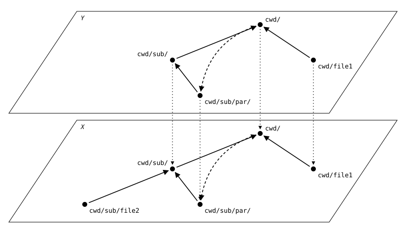
cwd/ (bottom) for a user without access to cwd/sub/file2. The dotted arrows show where each node of \(Y\) is sent in \(X\).
For this, we need to consider the subobject classifier \(\Omega\) of the topos of graphs7, which is given by
where the “true” arrow \(\top : 1 \to \Omega\) sends the only node and arc of the terminal graph \(1\) to \(N\) and \(A\), respectively.
Given a subgraph \(m : Y \rightarrowtail X\), the classifying map \(\chi_m : X \to \Omega\) works as follows:
- nodes which are not in \(Y\) are mapped to \(0_N\);
- nodes which are in \(Y\) are mapped to \(N\);
- if an arc is not in \(Y\), we have four possibilities:
- arcs whose source and target are not in \(Y\) are mapped to \(0_A\);
- arcs whose source is in \(Y\), but whose target is not, are mapped to \(s\);
- arcs whose target is in \(Y\), but whose source is not, are mapped to \(t\);
- arcs having both source and target in \(Y\) are mapped to \(\binom{s}{t}\);
- finally, an arc in \(Y\) is mapped to \(A\).
Conversely, \(Y\) is recovered from \(\chi_m\) as the pullback of \(\top\) along \(\chi_m\), and this sets up a one-to-one correspondence between subgraphs of \(X\) and graph morphisms \(X \to \Omega\).
In fact, by considering the subobject classifier, it becomes clear that some other subobjects, which we have not yet considered, are also possible, like just removing an edge \(p \in X(A)\) with \(X(s)(p) = x\) and \(X(t)(p) = y\), while keeping both \(x\) and \(y\) (i.e. mapping \(p\) to \(\binom{s}{t}\)). This corresponds to keeping the directory \(y\), but hiding that \(x\) lies inside it, so that a user without the corresponding access permission cannot follow through \(y\) to \(x\).
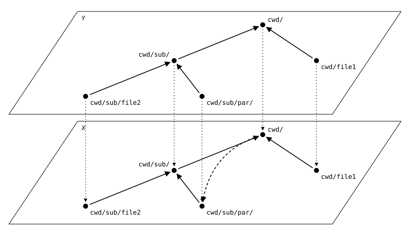
cwd/ (bottom) which keeps every node, but drops the symlink edge from cwd/ into cwd/sub/par/. The dotted arrows show where each node of \(Y\) is sent in \(X\).
If \(p\) was the only inbound arrow of \(y\), then \(y\) even appears as an empty directory to that user. The node \(x\) itself stays accessible, though, possibly along some other path. For example, removing the edge from cwd/ into the symlink cwd/sub/par/ (Figure 5) keeps both cwd/ and cwd/sub/par/ visible, but the symlink can no longer be followed back to cwd/.
Assume now that the graph \(X\) is given. How can we encode the access controls for its users? We first consider a single user \(u\), in which case we can simply store the characteristic map \(\chi_{Y_u} : X \to \Omega\) of the associated subgraph \(Y_u \rightarrowtail X\), after serialization: one of the two nodes of \(\Omega\) for every node of \(X\), and one of the five arcs of \(\Omega\) for every arc of \(X\).
In fact, for multiple users \(u_1, \dots, u_k\) we can proceed similarly, by considering the coproduct of the subgraphs \[Y_{u_1} \sqcup \dots \sqcup Y_{u_k} \rightarrowtail X \sqcup \dots \sqcup X,\] which is again a subgraph (coproducts of monomorphisms are monomorphisms in a topos). Its characteristic map is the copairing \[[\chi_{Y_{u_1}}, \dots, \chi_{Y_{u_k}}] : X \sqcup \dots \sqcup X \to \Omega,\] which we can serialize again. By the universal properties of the coproduct and the product, this is the same as a single graph morphism \[\langle \chi_{Y_{u_1}}, \dots, \chi_{Y_{u_k}} \rangle : X \to \Omega \times \dots \times \Omega,\] which stores at every node and arc of \(X\) a \(k\)-tuple of access rights, one per user. This is precisely the SELinux approach from the beginning: the access control information is kept alongside each file or directory.
Example: Apache and MariaDB
As Immanuel Kant said in his Critique of Pure Reason8,
Gedanken ohne Inhalt sind leer, Anschauungen ohne Begriffe sind blind
(thoughts without content are empty, intuitions without concepts are blind). We therefore wish to put the abstract theory of this post to work on the go-to example of SELinux, as described in Red Hat’s official guide9: assume we have two processes, an Apache web server running in the SELinux domain httpd_t, and a MariaDB database server running in the domain mysqld_t. We want to grant httpd_t access to the web content in /var/www/html/ (labeled httpd_sys_content_t), and mysqld_t access to the database files in /data/mysql/ (labeled mysqld_db_t), but not give httpd_t access to /data/mysql/, and vice versa not give mysqld_t access to /var/www/html/! This is depicted in the following diagram:
%%{init: {"theme": "base", "themeVariables": {"background": "#ffffff", "primaryColor": "#ffffff", "primaryBorderColor": "#000000", "primaryTextColor": "#000000", "lineColor": "#000000", "textColor": "#000000", "edgeLabelBackground": "#ffffff", "fontFamily": "sans-serif"}}}%%
flowchart TB
apache["Apache<br/><code>httpd_t</code>"] --> www["/var/www/html/<br/><code>httpd_sys_content_t</code>"]
mariadb["MariaDB<br/><code>mysqld_t</code>"] --> mysql["/data/mysql/<br/><code>mysqld_db_t</code>"]
apache -. "✗" .-> mysql
mariadb -. "✗" .-> www
We therefore need two different subgraphs of (a small part of) the FHS: one for httpd_t and one for mysqld_t, as we can see here:
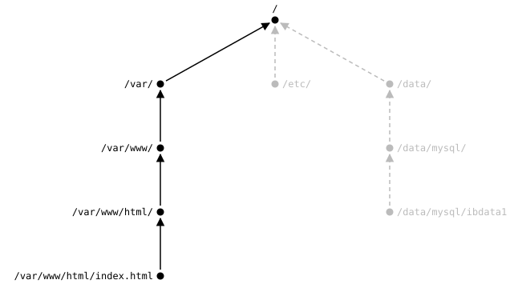
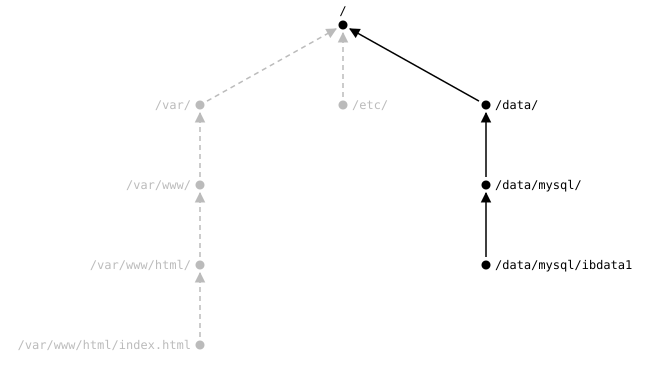
These two subgraphs are now given by the following two characteristic maps \(\chi_{\texttt{httpd\_t}}, \chi_{\texttt{mysqld\_t}} : \text{FHS} \to \Omega\). On nodes, they are given by \[
\chi_{\texttt{httpd\_t}}(x) = \begin{cases}
N & x \in \{\texttt{/}, \texttt{/var/}, \texttt{/var/www/},
\texttt{/var/www/html/}, \texttt{/var/www/html/index.html}\} \\
0_N & \text{otherwise}
\end{cases}
\] \[
\chi_{\texttt{mysqld\_t}}(x) = \begin{cases}
N & x \in \{\texttt{/}, \texttt{/data/}, \texttt{/data/mysql/},
\texttt{/data/mysql/ibdata1}\} \\
0_N & \text{otherwise}
\end{cases}
\] and on arcs \(p : x \to y\) by \[
\chi_{\texttt{httpd\_t}}(p) = \begin{cases}
A & x \in \{\texttt{/var/}, \texttt{/var/www/}, \texttt{/var/www/html/},
\texttt{/var/www/html/index.html}\} \\
t & x \in \{\texttt{/etc/}, \texttt{/data/}\} \\
0_A & \text{otherwise}
\end{cases}
\] \[
\chi_{\texttt{mysqld\_t}}(p) = \begin{cases}
A & x \in \{\texttt{/data/}, \texttt{/data/mysql/},
\texttt{/data/mysql/ibdata1}\} \\
t & x \in \{\texttt{/etc/}, \texttt{/var/}\} \\
0_A & \text{otherwise}
\end{cases}
\] (every node except / has exactly one outgoing arc, to its parent directory, so it suffices to name the source \(x\) of \(p\)). For example, the arc from /data/ to / is sent to \(t\) by \(\chi_{\texttt{httpd\_t}}\): Apache may see /, but not that /data/ lies inside it.
Finally, by considering the coproduct, we have a map from the algebraic data type10 \(\text{FHS} \sqcup \text{FHS}\) (think Either FHS FHS in Haskell) to \(\Omega\), namely the copairing \[[\chi_{\texttt{httpd\_t}}, \chi_{\texttt{mysqld\_t}}] :
\text{FHS} \sqcup \text{FHS} \to \Omega,\] i.e. using the universal properties of the coproduct and the product, a single graph morphism \[\langle \chi_{\texttt{httpd\_t}}, \chi_{\texttt{mysqld\_t}} \rangle :
\text{FHS} \to \Omega \times \Omega,\] where the projection onto the first \(\Omega\) in the product corresponds to the access control given to the Apache process running in the domain httpd_t, and the projection onto the second \(\Omega\) to the access control given to the MariaDB process running in the domain mysqld_t. Storing this morphism node by node and arc by arc is exactly storing a label alongside each file and directory, as SELinux does.
Serialization
We can now finally serialize this map and store it to disk, by encoding these characteristic maps and storing the tuples. Remember that a graph is a presheaf \(X\) over \(N \rightrightarrows A\), and that a graph morphism \(\chi : X \to \Omega\) is a natural transformation, i.e. a pair of functions \[\chi_N : X(N) \to \Omega(N), \qquad \chi_A : X(A) \to \Omega(A).\] Therefore, we need to store
- for each node \(v \in X(N)\) the value \(\chi_N(v) \in \Omega(N) = \{0_N, N\} \cong \texttt{Bool}\), i.e. a single bit, and
- for each arc \(p \in X(A)\) the value \(\chi_A(p) \in \Omega(A) = \{0_A, s, t, \tbinom{s}{t}, A\}\), one of five values.
Naturality saves us most of the second part, though: the source and target of \(\chi_A(p)\) have to be \(\chi_N\) of the source and target of \(p\). If one of the two endpoints of \(p\) is sent to \(0_N\), this already determines \(\chi_A(p)\) uniquely (as \(0_A\), \(s\) or \(t\)), so nothing needs to be stored. Only if both endpoints are sent to \(N\) do we have to store one more bit, deciding between \(A\) (the arc is visible) and \(\binom{s}{t}\) (the arc is hidden). For the Apache example, this means one bit per node, and one bit for each of the four arcs between visible nodes.
For \(k\) processes, the morphism \(\langle \chi_1, \dots, \chi_k \rangle : X \to \Omega^k\) is stored in the same way, as a \(k\)-tuple of such values at every node and every arc. On a real file system, the values at a node can be kept in the extended attributes of the corresponding file or directory, just like the security.selinux attribute in which SELinux stores its labels, and the values at an arc \(p : x \to y\) alongside the directory entry of \(x\) in \(y\).
By these observations, we can conclude that each file, directory and symlink needs an additional bit per user (or rather, per SELinux domain), encoding whether it should be accessible to that user. For directories and symlinks in particular, we also need to store a bit for each of their links (i.e. each entry of a directory, or the target of a symlink) for each user, signifying whether that link should also be accessible to the user. In our graph, these links are precisely the inbound arcs of the node, as arcs point from a file to its parent directory. Following the observation above, this bit only matters when both ends of the link are accessible; otherwise we simply store false. This gives us:
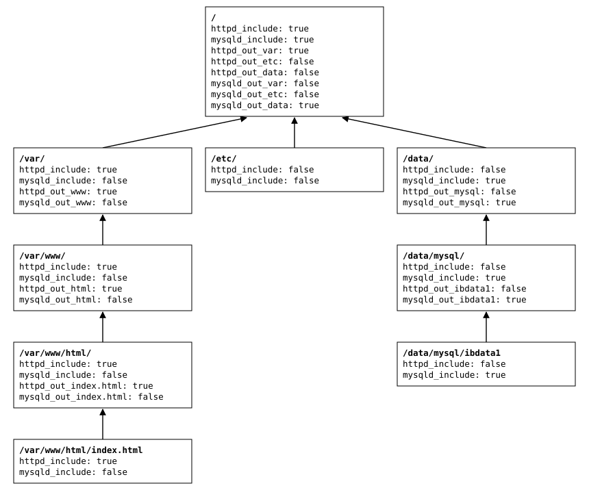
Further theory
To exploit the functionality that topos theory provides to us, we need to investigate the topos of graphs some more. The first observations are trivial: the initial and terminal objects are given by the empty graph and the graph with a single node and a single arc respectively, as shown in Figure 8.
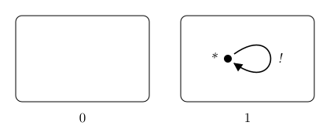
Global elements of a graph \(X\) are then given by morphisms \(x : 1 \to X\), which are clearly given by choosing a node of \(X\) together with a loop on it: \(x_N\) picks the node \(x_N(*)\), and \(x_A\) picks an arc \(x_A(!)\) whose source and target both have to be \(x_N(*)\), as in Figure 9.
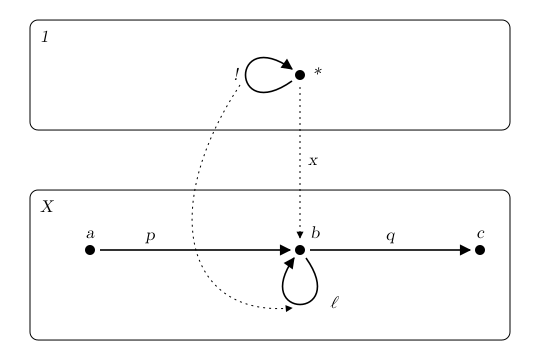
In particular, a graph without loops has no global elements at all, even if it has plenty of nodes.
We can now consider subobjects \([\![ x : X \mid \varphi(x) ]\!] \rightarrowtail X\), which consist of all those elements \(x\) of \(X\) which satisfy some predicate \(\varphi : X \to \Omega\). Formally, \([\![ x : X \mid \varphi(x) ]\!]\) is the pullback of \(\top : 1 \to \Omega\) along \(\varphi\). By the observation above, “element” cannot just mean global element here: a graph without loops has no global elements, but still has plenty of subgraphs. Instead, we have to read \(x\) as a generalized element in context \(U\), written \(x : U \to X\), or, more concretely, as a node or an arc of \(X\), which lies in the subobject precisely if \(\varphi\) sends it to \(N\) resp. \(A\).
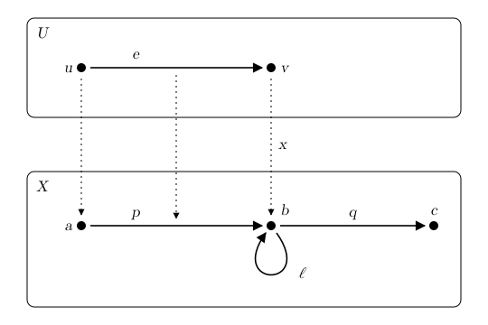
An example would be the subgraphs from before: \(Y_{\texttt{httpd\_t}}\) is just \([\![ x : \text{FHS} \mid \chi_{\texttt{httpd\_t}}(x) ]\!]\). More interestingly, we can combine predicates with the logical connectives of \(\Omega\). For example, \[[\![ x : \text{FHS} \mid \chi_{\texttt{httpd\_t}}(x) \land
\chi_{\texttt{mysqld\_t}}(x) ]\!] = Y_{\texttt{httpd\_t}} \cap
Y_{\texttt{mysqld\_t}}\] is the part of the FHS which both Apache and MariaDB have access to, which only consists of the root node /. Note that the arcs \(\texttt{/var/} \to \texttt{/}\) and \(\texttt{/data/} \to \texttt{/}\) are not part of it, since \(\land : \Omega \times \Omega \to \Omega\) sends \((A, t)\) and \((t, A)\) to \(t\).
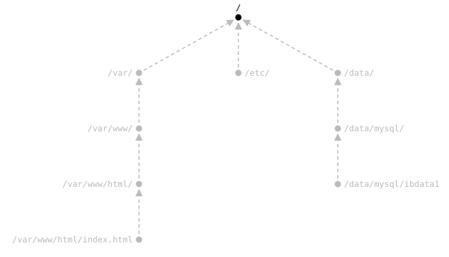
Warning
This text has not been reviewed yet. Preferably we would like an expert on topos theory and one on SELinux to review it, but any feedback is welcome.
In particular, it is still an open question if all restriction maps and the way sets are associated to nodes and arcs in the topos of graphs are correct.
Footnotes
See the ArchWiki on mandatory access control.↩︎
See the SELinux kernel repository.↩︎
Sebastiano Vigna, A guided tour in the topos of graphs, 2003.↩︎
See my bachelor thesis at happel.ai/bachelor2.↩︎
See again Vigna, A guided tour in the topos of graphs.↩︎
Immanuel Kant, Kritik der reinen Vernunft, A51/B75.↩︎
See Red Hat, Using SELinux, Chapter 1: Getting started with SELinux.↩︎
See the Haskell wiki on algebraic data types.↩︎